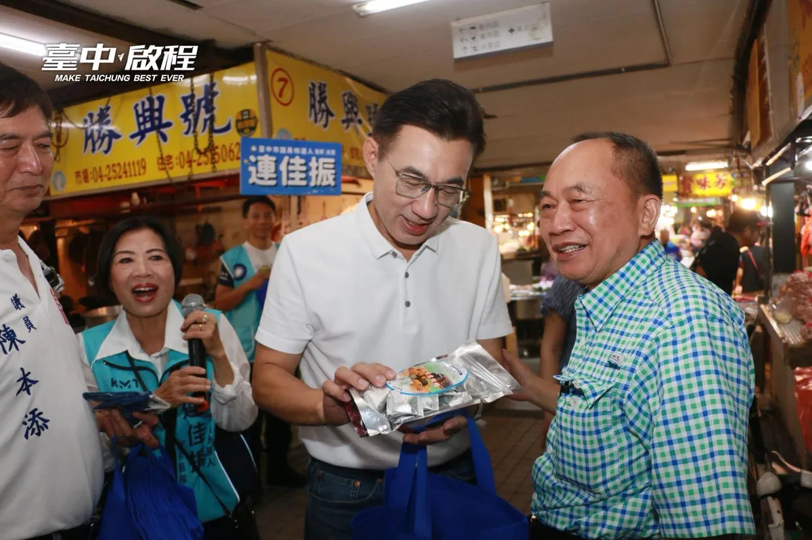
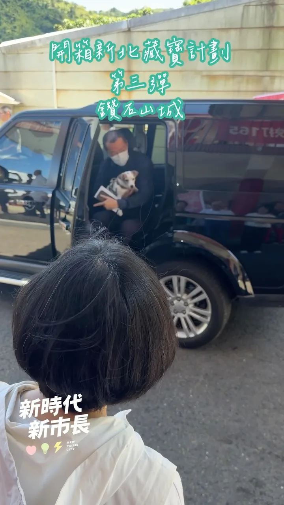
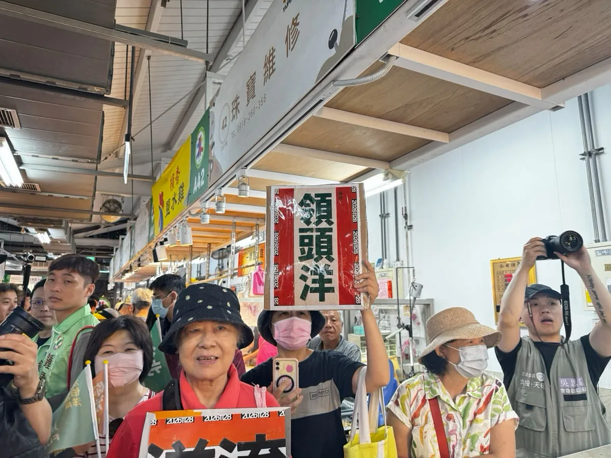
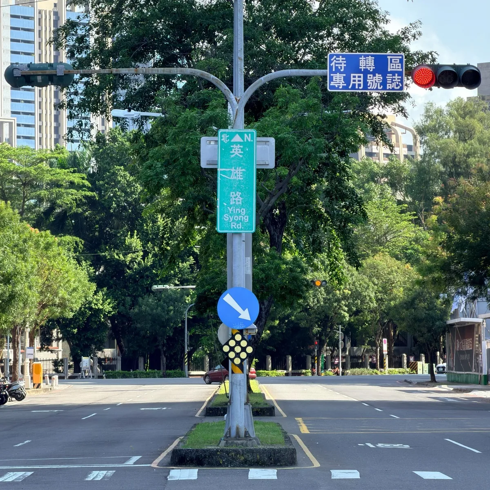
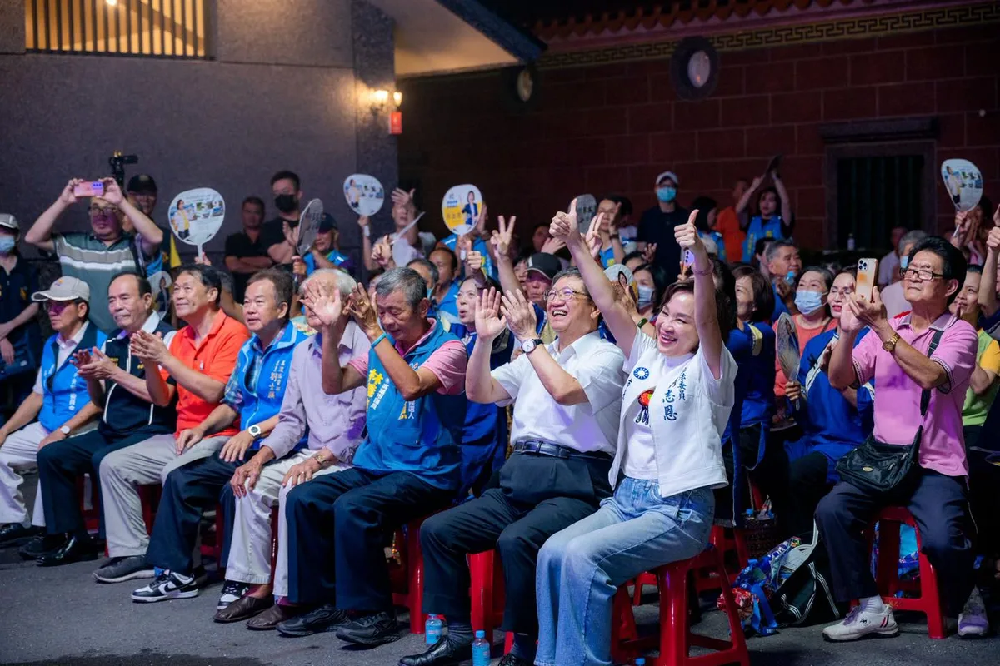
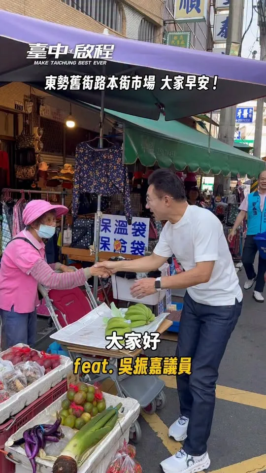

MAYOR2026.OBSERVE.TW
整理臺北、新北、桃園、臺中、臺南、高雄市長候選人的官方公開發文，跨平台合併時間軸與議題比例。
Six Municipalities
最後更新 2026-09-19 17:27
Latest

@schuanglawyer:人好多！大家有在畫面裡看到我嗎？ 今天一早到桃園，跟健走的好朋友打招呼👋這幾個月持續勤跑，持續跟市民朋友近距離互動，緊握每一雙手！ 「最近已經看到你好幾次，桃園就是需要有活力、勤跑基層的市長！」 世杰會全力以赴，推動家鄉進步，請大家跟我一起打造活力心桃園💖

@su.chiaohui:聯合競總從永和出發！感謝 #許昭興 議員今天成立和我的永和聯合競選總部，接下來我也會陸續在新北29區成立聯合競選總部。 最後70天，新北隊一起衝，迎接新北新時代！

鄉親的喉糖顧嗓，每聲加油暖心！❤️ 今天走進 #豐原第一市場，和熟悉的攤商、採買的鄉親握手問好。一位大哥特地送上枇杷喉糖，提醒我照顧喉嚨；還有鄉親高喊「海龍一定當選！」、拿著「臺中啟程」提袋與我合照，滿滿人情味，讓啟臣感謝又感動。 一包喉糖、一聲加油，都是支持，更是責任。啟臣會繼續一步一腳印，走進大家的日常、傾聽地方需求，把鄉親的疼惜化為服務的動力，為臺中拚更好的未來！ #臺中啟程 #打造旗艦城 #臺中升級幸福加給

何欣純北屯金谷市場走一圈！想和你聊聊天🫶


早安！我們等下見！！ 🕤️時間：9／19（六）上午9：30 🌏️地點：大里新興宮（八媽廟) 大里區新仁路2段162號
等我嗎？ 我來了！ 謝謝你們願意等待何欣純！❤ 🌊欣潮 💫追欣族🍄何鮮菇 🫶台中純派 #台中北屯總站夜市😘😘

大家準備好讓 台北 沈伯洋 吃不完帶著走了嗎？ 不只讓要讓他嚐嚐南部的甜，也要讓他感受我們高雄的熱情！ 明天，賴瑞隆 x 沈伯洋 合體登場！從英雄路出發，走進港灣，用行動展現咱對這座城市的愛。 邀請大家揪朋友、帶家人，把線上的加油，化成現場最有力的相挺，明天下午4點，我們英雄路見！ ⏰ 時間｜9月19日（六）下午4點 📍 集合｜五福三路、英雄路口 🚶 路線｜集合出發 → 英雄路 → Focus 13珊瑚廣場 → 愛河灣水樂園 🔔 提醒｜因候選人後續尚有民進黨40週年音樂會行程，現場不開放簽名

20260918 談天說地論臺灣 @longmedia ｜龍介的直播

開箱新北第三彈——鑽石山城！ 大家都知道新北有得天獨厚的山海美景，而我今天再次請到重量級來賓宣傳我們這次的主題「鑽石山城」，這位VIP就是樂樂⋯⋯的主人—— @tsai_ingwen 小英總統！ 這一次的尋寶紀念品是與漫畫家季雅 @kiyascomic 以及插畫家Asta Wu @asta_astawu 合作！ 季雅的作品《異人茶跡》帶我們透過茶葉的歷史故事，看見百年以前臺灣茶走向世界的過程；而Asta Wu 除了有和山林製造以及林業署合作的插畫設計，也有自己的「臺灣特色茶」系列插畫。這裡面，都與我們新北山城的製茶文化息息相關，非常推薦大家除了參與這次的藏寶計劃，也看看兩位創作者的精彩作品！ 希望大家一起透過尋寶，更認識新北閃亮亮的「鑽石山城」！ 🌟每人請拿「一份」鐵盒中的紀念品，讓較晚抵達的參與者也能發現驚喜～也歡迎留言給我喔！ 這次的藏寶盒裡面有～～～ 🎁水獺媽媽與季雅、Asta Wu限量「聯名壓克力鑰匙圈」（2款各3個） 🎁水獺媽媽與季雅、Asta Wu獨家「聯名貼紙」（2款各10張） 🎁加碼水獺媽媽角色貼紙（每個藏寶點不同）
大家準備好讓 台北 沈伯洋 吃不完帶著走了嗎？ 不只讓要讓他嚐嚐南部的甜，也要讓他感受我們高雄的熱情！ 明天，賴瑞隆 x 沈伯洋 合體登場！從英雄路出發，走進港灣，用行動展現咱對這座城市的愛。 邀請大家揪朋友、帶家人，把線上的加油，化成現場最有力的相挺，明天下午4點，我們英雄路見！ ⏰ 時間｜9月19日（六）下午4點 📍 集合｜五福三路、英雄路口 🚶 路線｜集合出發 → 英雄路 → Focus 13珊瑚廣場 → 愛河灣水樂園 🔔 提醒｜因候選人後續尚有民進黨40週年音樂會行程，現場不開放簽名


@chen_tingfei:報告！今天輪到軍人妃妃泰迪熊報到🫡🐻 這身裝備是不是很帥氣呢！ 妃妃熊持續解鎖中🔓 明天會是哪一隻呢？👀


@pumashen:每次簽名在名牌包上 我都會心頭一驚 這是可以簽的嗎？ 只能說幸好 我現在手比較穩了哈哈 還有人燙了 我好想念的「撲馬頭」 最狠的是簽拍照鏡頭 我很好奇 那以後拍照都會有沈伯洋嗎 謝謝大家今天的熱情 市場沒走完，明天繼續 謝謝大家 準備往高雄出發

洋流即將到港，隆捲風蓄勢待發🌪️ 各路好漢，今天下午4點英雄路集合！ 天氣晴朗又遇 台北 沈伯洋 洋流來襲，記得做好防曬、隨時補充水分，我們不見不散！ ⏰ 時間｜9月19日 （六）下午4點 📍 集合｜五福三路、英雄路口 🚶 路線｜集合出發 → 英雄路 → Focus 13珊瑚廣場 → 愛河灣水樂園 🔔 提醒｜因候選人後續尚有民進黨40週年音樂會行程，現場不開放簽名
謝謝烏日！ 超過1500位鄉親的熱情，啟臣都收到了！ 烏日是臺中人口成長最快的地方之一，更是未來的「中臺灣第三大門戶」。面對發展，我會和 為民說話-吳瓊華 市議員、顏寬恒 委員一起打拚，為烏日的未來超前部署！ ✨20分鐘生活圈：加速鐵路高架化與烏日轉運中心興建，讓鄉親20分鐘內輕鬆滿足就醫、就學、就業與生活所需。 ✨超前部署交通：因應未來購物城車流，我與寬恒委員持續向中央爭取國一及台74線增設匝道直通高鐵，並新闢聯外道路，減輕塞車負擔。 ✨全齡安心照顧：從新建旭日國小到升級敬老愛心卡，用心守護長輩與孩子。 這裡沒有政治口水，只有實實在在的願景。請大家當啟臣與瓊華議員最強的後盾，我一定用「#加倍的建設」回報烏日，帶領臺中迎向下一個黃金十年！💪 #臺中啟程 #打造旗艦城 #中臺灣第三大門戶 #20分鐘生活圈 #高鐵特區

@a_chun1973:早安！我們等下見！！ 🕤️時間：9／19（六）上午9：30 🌏️地點：大里新興宮（八媽廟) 大里區新仁路2段162號

#美濃 ，我回來了！ 四年前，美濃是原鄉之外，唯一讓我勝選的地方。那時候我在 #天后宮 向天上聖母、向鄉親承諾：我要留下來。 四年後，我再次站在這裡，我可以很驕傲地說：我留下來了，而且我沒有忘記當初的承諾！ 我是屏東鄉下長大的孩子，小學五年級時，爸爸就常帶我來美濃。他告訴我，美濃是最重視 #教育 的地方。後來很多學生也來美濃當老師，這裡的忠義精神，一直讓我印象深刻。 所以去年揭露 #美濃大峽谷 ，不是因為我不愛美濃，正是因為我太捨不得。美濃的好山好水，不能被「大峽谷」這個名字給埋沒。 同樣的，美濃的淹水問題也不能再拖。強化美濃溪、東門排水、福安排水等防洪系統，並持續改善路基穩定性與排水系統。同時，透過系統性的河川整治、橋墩設施改善，該做的治水、疏浚，就應該一項一項做好。 我要照顧好美濃的長輩，給年輕人舞台，讓孩子有競爭力，更要把美濃的客家文化推向全台灣、推向全世界！ 今晚特別感謝新竹縣長 楊文科 南下相挺，楊縣長提到，美濃是 #客家 文化的重要重鎮，也是人才輩出的地方，這裡重視教育、崇尚忠義，擁有「硬頸」打拚、不向困難低頭的客家精神。也感謝我的好姐妹、美濃的女兒 朱海君 Angel 一如既往的動人、漂亮到場獻唱。 讓我們一起掀起高雄的大風，重現高雄的奇蹟！ 感謝 高雄市議員林義迪 及參選人 李振豪 及里長、仕紳貴賓好朋友們。
@zenolai:大家準備好讓 @pumashen 吃不完帶著走了嗎？ 不只讓要讓他嚐嚐南部的甜，也要讓他感受我們高雄的熱情！ 明天，賴瑞隆 x 沈伯洋 合體登場！從英雄路出發，走進港灣，用行動展現咱對這座城市的愛。 邀請大家揪朋友、帶家人，把線上的加油，化成現場最有力的相挺，明天下午4點，我們英雄路見！ ⏰ 時間｜9月19日（六）下午4點 📍 集合｜五福三路、英雄路口 🚶 路線｜集合出發 → 英雄路 → Focus 13珊瑚廣場 → 愛河灣水樂園 🔔 提醒｜因候選人後續尚有民進黨40週年音樂會行程，現場不開放簽名

@su.chiaohui:開箱新北第三彈——鑽石山城！ 大家都知道新北有得天獨厚的山海美景，而我今天再次請到重量級來賓宣傳我們這次的主題「鑽石山城」，這位VIP就是樂樂⋯⋯的主人—— @tsai_ingwen 小英總統！ 這一次的尋寶紀念品是與漫畫家季雅 @kiyascomic以及插畫家Asta Wu @asta_astawu合作！ 季雅的作品《異人茶跡》帶我們透過茶葉的歷史故事，看見百年以前臺灣茶走向世界的過程；而Asta Wu 除了有和山林製造以及林業署合作的插畫設計，也有自己的「臺灣特色茶」系列插畫。這裡面，都與我們新北山城的製茶文化息息相關，非常推薦大家除了參與這次的藏寶計劃，也看看兩位創作者的精彩作品！ 希望大家一起透過尋寶，更認識新北閃亮亮的「鑽石山城」！

美琴好姊妹 明天我們台中見！
美琴好姊妹 明天我們台中見！


@hammer__lee:「這戰一定要贏！」我最敬重的侯友宜主委，為我喊出這一句，我有信心，一定贏。 今天，是李四川競選總部啟用的日子，我也正式宣布，侯友宜市長擔任競選總部主任委員，不管過去、現在和未來，我們始終並肩作戰，身分不同，兄弟情相同。 選戰倒數70天，侯市長擔任我的競總主委，讓我更有信心拚贏這場選戰，十幾年來我們都在彼此身旁，這次，他是我的後盾，是我的底氣。 侯市長八年執政，帶領新北市快速發展向前，我一定會在他奠基的所有基礎之上，全力以赴，穩穩接下他的這一棒，讓新北越來越棒。 「過去有四川、現在侯友宜，未來要回到李四川」，侯友宜主委這一句話，替我做了見證，看到我過往在新北的成績，包括軌道建設、都更進展，我們都一起在為新北努力。 那些我做過的，都刻在新北這片土地上。 謝謝侯友宜主委，您挺到底，我拚到底。
【Otter Mama’s Little Chats】Bobo is Feeling Cranky Today | Emotional Education | Understanding and...

首都格局 台中進擊！台中市長候選人何欣純大里、霧峰後援會成立大會

@a_chun1973:早安！我們等下見！！ 🕤️時間：9／19（六）上午9：30 🌏️地點：大里新興宮（八媽廟) 大里區新仁路2段162號

@a_chun1973:等我嗎？ 我來了！ 謝謝你們願意等待何欣純！ 🌊欣潮 ⭐追欣族 🍄🟫何鮮菇 🫶台中純派 🔥台中北屯總站夜市😘😘


#美濃 ，我回來了！ 四年前，美濃是原鄉之外，唯一讓我勝選的地方。那時候我在 #天后宮 向天上聖母、向鄉親承諾：我要留下來。 四年後，我再次站在這裡，我可以很驕傲地說：我留下來了，而且我沒有忘記當初的承諾！ 我是屏東鄉下長大的孩子，小學五年級時，爸爸就常帶我來美濃。他告訴我，美濃是最重視 #教育 的地方。後來很多學生也來美濃當老師，這裡的忠義精神，一直讓我印象深刻。 所以去年揭露 #美濃大峽谷 ，不是因為我不愛美濃，正是因為我太捨不得。美濃的好山好水，不能被「大峽谷」這個名字給埋沒。 同樣的，美濃的淹水問題也不能再拖。強化美濃溪、東門排水、福安排水等防洪系統，並持續改善路基穩定性與排水系統。同時，透過系統性的河川整治、橋墩設施改善，該做的治水、疏浚，就應該一項一項做好。 我要照顧好美濃的長輩，給年輕人舞台，讓孩子有競爭力，更要把美濃的客家文化推向全台灣、推向全世界！ 今晚特別感謝新竹縣長 楊文科 南下相挺，楊縣長提到，美濃是 #客家 文化的重要重鎮，也是人才輩出的地方，這裡重視教育、崇尚忠義，擁有「硬頸」打拚、不向困難低頭的客家精神。也感謝我的好姐妹、美濃的女兒 朱海君 Angel 一如既往的動人、漂亮到場獻唱。 讓我們一起掀起高雄的大風，重現高雄的奇蹟！ 感謝 高雄市議員林義迪 及參選人 李振豪 及里長、仕紳貴賓好朋友們。


20260918 談天說地論臺灣｜龍介的直播
何欣純推屯區「五大進擊」 打造六星新屯區 台中市長候選人、立法委員何欣純今（18） […] 〈 何欣純推屯區「五大進擊」 打造六星新屯區 〉這篇文章最早發佈於《 何欣純官方網站｜2026 台中市長候選人 》。

@a_chun1973:美琴好姊妹 明天我們台中見！

每一位 #東勢 鄉親朋友的支持與鼓勵，啟臣都收到了！ 看著大家從我擔任第一屆立法委員以來，就一路熱情相挺，讓人感到無比溫暖。 剩下的日子，我們一起繼續走完、一起打拚！